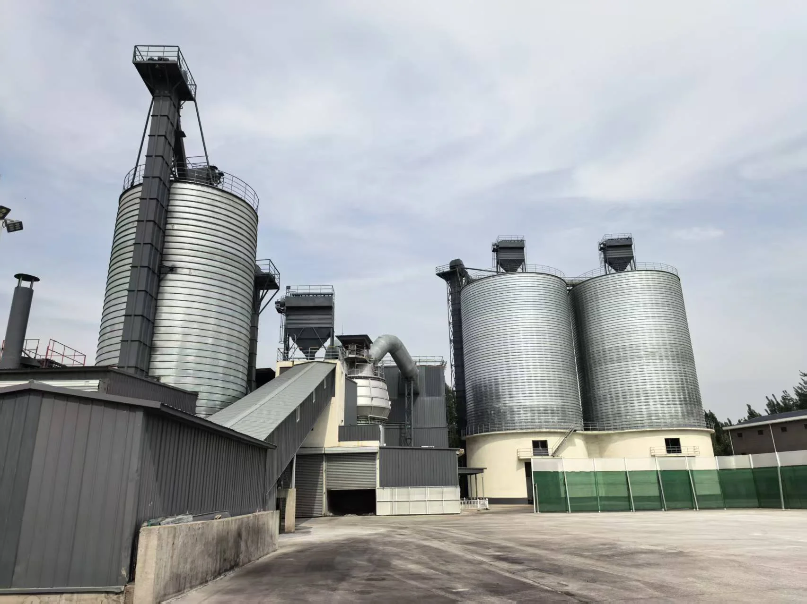

2026-09-13
Vietnam Cement Expansion Links Capacity and Materials
A proposed expansion at the Hon Chong cement plant shows why production growth, alternative raw-material qualification and freight readiness must be planned together.
越南水泥扩产把产能与替代原料连接起来
Hon Chong 水泥厂的一项拟议扩产计划表明，产能增长、替代原料认证与货运保障必须同步规划。

CemNet reported on 11 September 2026 that Siam City Cement PLC was considering a second and third production line at its Hon Chong plant in Vietnam's An Giang province. The company said it intended to use modern production technology, increase alternative raw-material use and reduce clinker consumption. Capacity, investment value and construction timing had not been disclosed, so the report is a planning signal rather than confirmation of a committed expansion schedule.
1. New capacity begins with an upstream balance
Additional cement output requires a matched plan for every major input. Clinker, gypsum, supplementary cementitious materials, fuels and additives must be available in the right quality and sequence. If feedstock qualification or delivery capacity lags behind equipment installation, nominal production capacity cannot become dependable saleable output.

2. Clinker reduction increases the need for qualification
The report does not identify which alternative materials would be selected, and no specific material should be assumed. It does, however, reinforce a wider procurement principle: lowering the clinker factor requires each candidate material to be assessed for chemistry, moisture, fineness or grindability, reactivity, compatibility and final cement performance. Established materials such as GBFS and GGBFS can form part of a diversified SCM strategy where the plant process, standards and product formulation support their use.
3. Freight planning must grow with production
The Vietnamese authorities also highlighted freight transportation in their discussions with the company. This matters because added output changes both inbound and outbound flows. Buyers and producers need to test port or road capacity, storage turnover, unloading rate, vessel or truck scheduling and seasonal disruption before fixing supply assumptions. SENLAN coordinates GBFS and GGBFS supply from Tangshan and Caofeidian, with quality and shipment terms defined for each project.

Takeaway: The Hon Chong proposal has not yet disclosed a final capacity, budget or timetable. Its commercial significance is the planning model it points toward: cement expansion and clinker reduction create value only when qualified alternative materials and freight execution can support production consistently. Source: CemNet, published 11 September 2026.
CemNet 于 2026 年 9 月 11 日报道，Siam City Cement PLC 正考虑在越南安江省 Hon Chong 水泥厂建设第二和第三条生产线。公司表示，拟在扩建中采用现代生产技术，提高替代原料使用比例并降低熟料消耗。报道尚未披露新增产能、投资金额和建设时间，因此这是一项规划信号，而不是已经确定的扩产进度。
1. 新增产能首先需要上游平衡
水泥产量增加，需要同步配置所有主要投入。熟料、石膏、补充胶凝材料、燃料和添加剂必须以正确的质量和节奏到位。如果原料认证或交付能力落后于设备建设，名义产能就无法转化为稳定、可销售的产量。
2. 降低熟料比例会提高认证要求
报道没有说明最终会选择哪些替代原料，因此不能预设具体材料。但它强化了一项更普遍的采购原则：降低熟料系数时，必须针对候选材料核验化学组成、水分、细度或易磨性、活性、相容性和最终水泥性能。在工艺、标准和产品配方适用的条件下，粒化高炉矿渣（GBFS）和矿渣粉（GGBFS）等成熟材料可成为多元化 SCM 组合的一部分。
3. 货运能力必须与产能同步增长
越南有关部门在与企业讨论时也提到了货物运输。扩产会同时改变进厂和出厂物流，因此生产商与买方需要在形成供应假设前，评估港口或道路能力、仓储周转、卸货效率、船舶或车辆排期以及季节性中断。SENLAN 依托唐山与曹妃甸协调 GBFS 和 GGBFS 供应，并按具体项目约定质量和发运条件。
结论：Hon Chong 项目尚未公布最终产能、预算或时间表。它的商业意义在于所体现的规划方式：只有合格替代原料与货运执行能够持续支撑生产，水泥扩产和熟料减量才能真正创造价值。来源：CemNet，发布于 2026 年 9 月 11 日。